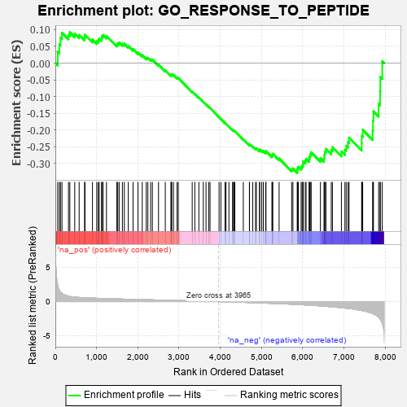
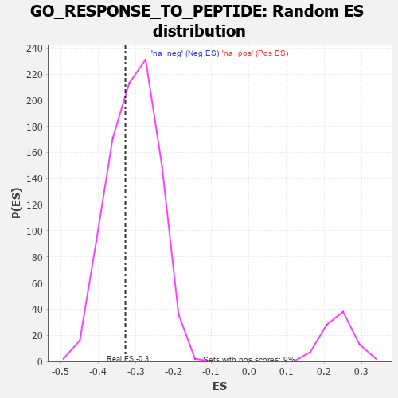

| | | Dataset | 7d |
| Phenotype | NoPhenotypeAvailable |
| Upregulated in class | na_neg |
| GeneSet | GO_RESPONSE_TO_PEPTIDE |
| Enrichment Score (ES) | -0.32797733 |
| Normalized Enrichment Score (NES) | -1.0713243 |
| Nominal p-value | 0.36732456 |
| FDR q-value | 0.79003626 |
| FWER p-Value | 1.0 |
Table: GSEA Results Summary

Fig 1: Enrichment plot: GO_RESPONSE_TO_PEPTIDE
Profile of the Running ES Score & Positions of GeneSet Members on the Rank Ordered List
| PROBE | GENE SYMBOL | GENE_TITLE | RANK IN GENE LIST | RANK METRIC SCORE | RUNNING ES | CORE ENRICHMENT | | 1 | MC4R | | | 57 | 2.491 | 0.0337 | No |
| 2 | IRS1 | | | 98 | 1.659 | 0.0559 | No |
| 3 | ADCY8 | | | 124 | 1.418 | 0.0760 | No |
| 4 | CSRP3 | | | 161 | 1.186 | 0.0909 | No |
| 5 | KLF11 | | | 318 | 0.788 | 0.0840 | No |
| 6 | GSK3A | | | 351 | 0.745 | 0.0922 | No |
| 7 | LRP1 | | | 470 | 0.648 | 0.0879 | No |
| 8 | APEX1 | | | 577 | 0.604 | 0.0843 | No |
| 9 | CDC6 | | | 709 | 0.557 | 0.0768 | No |
| 10 | ID1 | | | 719 | 0.555 | 0.0848 | No |
| 11 | HDAC5 | | | 900 | 0.506 | 0.0702 | No |
| 12 | MEN1 | | | 1003 | 0.483 | 0.0652 | No |
| 13 | AKT1 | | | 1040 | 0.476 | 0.0684 | No |
| 14 | AP3S1 | | | 1063 | 0.471 | 0.0734 | No |
| 15 | G6PC | | | 1121 | 0.459 | 0.0737 | No |
| 16 | SRC | | | 1128 | 0.459 | 0.0804 | No |
| 17 | GAB1 | | | 1158 | 0.453 | 0.0842 | No |
| 18 | KAT7 | | | 1240 | 0.440 | 0.0811 | No |
| 19 | GPT | | | 1488 | 0.392 | 0.0562 | No |
| 20 | INHBB | | | 1514 | 0.388 | 0.0594 | No |
| 21 | SOS1 | | | 1547 | 0.384 | 0.0616 | No |
| 22 | CDK4 | | | 1626 | 0.370 | 0.0578 | No |
| 23 | BACE1 | | | 1673 | 0.360 | 0.0578 | No |
| 24 | LRP5 | | | 1769 | 0.342 | 0.0514 | No |
| 25 | NCOA5 | | | 1884 | 0.322 | 0.0422 | No |
| 26 | FOXO4 | | | 2004 | 0.304 | 0.0320 | No |
| 27 | BMP7 | | | 2107 | 0.290 | 0.0238 | No |
| 28 | C2CD5 | | | 2204 | 0.276 | 0.0162 | No |
| 29 | CREB1 | | | 2243 | 0.269 | 0.0158 | No |
| 30 | SRSF4 | | | 2311 | 0.258 | 0.0115 | No |
| 31 | CDC5L | | | 2353 | 0.253 | 0.0104 | No |
| 32 | KAT2B | | | 2502 | 0.226 | -0.0047 | No |
| 33 | GRB14 | | | 2666 | 0.204 | -0.0221 | No |
| 34 | FER | | | 2803 | 0.183 | -0.0363 | No |
| 35 | SYAP1 | | | 2811 | 0.182 | -0.0342 | No |
| 36 | PCK2 | | | 2823 | 0.180 | -0.0327 | No |
| 37 | WDTC1 | | | 2865 | 0.172 | -0.0351 | No |
| 38 | RAB10 | | | 2952 | 0.157 | -0.0434 | No |
| 39 | ANO1 | | | 2982 | 0.152 | -0.0446 | No |
| 40 | RAB8A | | | 3319 | 0.102 | -0.0857 | No |
| 41 | PPAT | | | 3382 | 0.091 | -0.0920 | No |
| 42 | CDK5 | | | 3480 | 0.080 | -0.1031 | No |
| 43 | TNS2 | | | 3588 | 0.062 | -0.1157 | No |
| 44 | FIS1 | | | 3654 | 0.051 | -0.1231 | No |
| 45 | HSF1 | | | 3718 | 0.039 | -0.1305 | No |
| 46 | LPIN3 | | | 3751 | 0.034 | -0.1340 | No |
| 47 | IGF1R | | | 3970 | -0.002 | -0.1617 | No |
| 48 | PARP1 | | | 4014 | -0.010 | -0.1670 | No |
| 49 | MTOR | | | 4114 | -0.025 | -0.1792 | No |
| 50 | CRK | | | 4139 | -0.031 | -0.1817 | No |
| 51 | TIMP1 | | | 4209 | -0.043 | -0.1898 | No |
| 52 | USF1 | | | 4296 | -0.059 | -0.1997 | No |
| 53 | TSHR | | | 4322 | -0.063 | -0.2019 | No |
| 54 | OPA1 | | | 4330 | -0.065 | -0.2017 | No |
| 55 | ADRB2 | | | 4352 | -0.068 | -0.2032 | No |
| 56 | APC | | | 4558 | -0.107 | -0.2275 | No |
| 57 | RAP1B | | | 4706 | -0.140 | -0.2439 | No |
| 58 | CPEB2 | | | 4709 | -0.141 | -0.2419 | No |
| 59 | MYO5A | | | 4787 | -0.155 | -0.2491 | No |
| 60 | USO1 | | | 4855 | -0.168 | -0.2549 | No |
| 61 | SIK2 | | | 4875 | -0.172 | -0.2545 | No |
| 62 | CHMP5 | | | 4952 | -0.188 | -0.2610 | No |
| 63 | PRKDC | | | 4955 | -0.189 | -0.2582 | No |
| 64 | KLF4 | | | 5005 | -0.198 | -0.2611 | No |
| 65 | PDPK1 | | | 5043 | -0.207 | -0.2624 | No |
| 66 | DDX11 | | | 5102 | -0.225 | -0.2661 | No |
| 67 | MMP9 | | | 5108 | -0.227 | -0.2630 | No |
| 68 | IDE | | | 5252 | -0.258 | -0.2770 | No |
| 69 | PTEN | | | 5262 | -0.261 | -0.2738 | No |
| 70 | EPHA4 | | | 5273 | -0.265 | -0.2707 | No |
| 71 | GCNT1 | | | 5426 | -0.301 | -0.2851 | No |
| 72 | CALCR | | | 5730 | -0.386 | -0.3173 | No |
| 73 | TLR2 | | | 5761 | -0.395 | -0.3146 | No |
| 74 | STAT4 | | | 5867 | -0.424 | -0.3210 | Yes |
| 75 | RAB13 | | | 5870 | -0.425 | -0.3143 | Yes |
| 76 | CDO1 | | | 5892 | -0.432 | -0.3098 | Yes |
| 77 | ACTN2 | | | 5960 | -0.458 | -0.3108 | Yes |
| 78 | SCAP | | | 5986 | -0.466 | -0.3064 | Yes |
| 79 | PTPRN | | | 6007 | -0.474 | -0.3011 | Yes |
| 80 | XBP1 | | | 6011 | -0.475 | -0.2937 | Yes |
| 81 | JAG1 | | | 6060 | -0.494 | -0.2917 | Yes |
| 82 | FBN1 | | | 6080 | -0.499 | -0.2859 | Yes |
| 83 | ROCK1 | | | 6152 | -0.520 | -0.2864 | Yes |
| 84 | EGR1 | | | 6165 | -0.527 | -0.2792 | Yes |
| 85 | KLF2 | | | 6182 | -0.532 | -0.2725 | Yes |
| 86 | INSR | | | 6204 | -0.538 | -0.2663 | Yes |
| 87 | CSK | | | 6428 | -0.630 | -0.2843 | Yes |
| 88 | TRPV4 | | | 6515 | -0.668 | -0.2843 | Yes |
| 89 | VAMP2 | | | 6525 | -0.672 | -0.2744 | Yes |
| 90 | KANK1 | | | 6536 | -0.678 | -0.2645 | Yes |
| 91 | OTOP1 | | | 6562 | -0.690 | -0.2563 | Yes |
| 92 | PAK1 | | | 6691 | -0.757 | -0.2602 | Yes |
| 93 | GSK3B | | | 6719 | -0.768 | -0.2510 | Yes |
| 94 | GHSR | | | 6937 | -0.894 | -0.2639 | Yes |
| 95 | NR4A1 | | | 7022 | -0.951 | -0.2589 | Yes |
| 96 | GRM5 | | | 7053 | -0.969 | -0.2468 | Yes |
| 97 | CSH1 | | | 7098 | -0.995 | -0.2360 | Yes |
| 98 | RBBP4 | | | 7123 | -1.010 | -0.2225 | Yes |
| 99 | KLF5 | | | 7429 | -1.304 | -0.2398 | Yes |
| 100 | OTC | | | 7430 | -1.305 | -0.2184 | Yes |
| 101 | MMP13 | | | 7453 | -1.340 | -0.1992 | Yes |
| 102 | ADCY1 | | | 7695 | -1.752 | -0.2010 | Yes |
| 103 | ADCY9 | | | 7704 | -1.783 | -0.1727 | Yes |
| 104 | GNRHR | | | 7714 | -1.811 | -0.1441 | Yes |
| 105 | SP1 | | | 7840 | -2.321 | -0.1218 | Yes |
| 106 | MMP2 | | | 7875 | -2.574 | -0.0838 | Yes |
| 107 | FYN | | | 7881 | -2.622 | -0.0414 | Yes |
| 108 | VWA2 | | | 7927 | -3.205 | 0.0056 | Yes |
Table: GSEA details [plain text format]

Fig 2: GO_RESPONSE_TO_PEPTIDE: Random ES distribution
Gene set null distribution of ES for GO_RESPONSE_TO_PEPTIDE